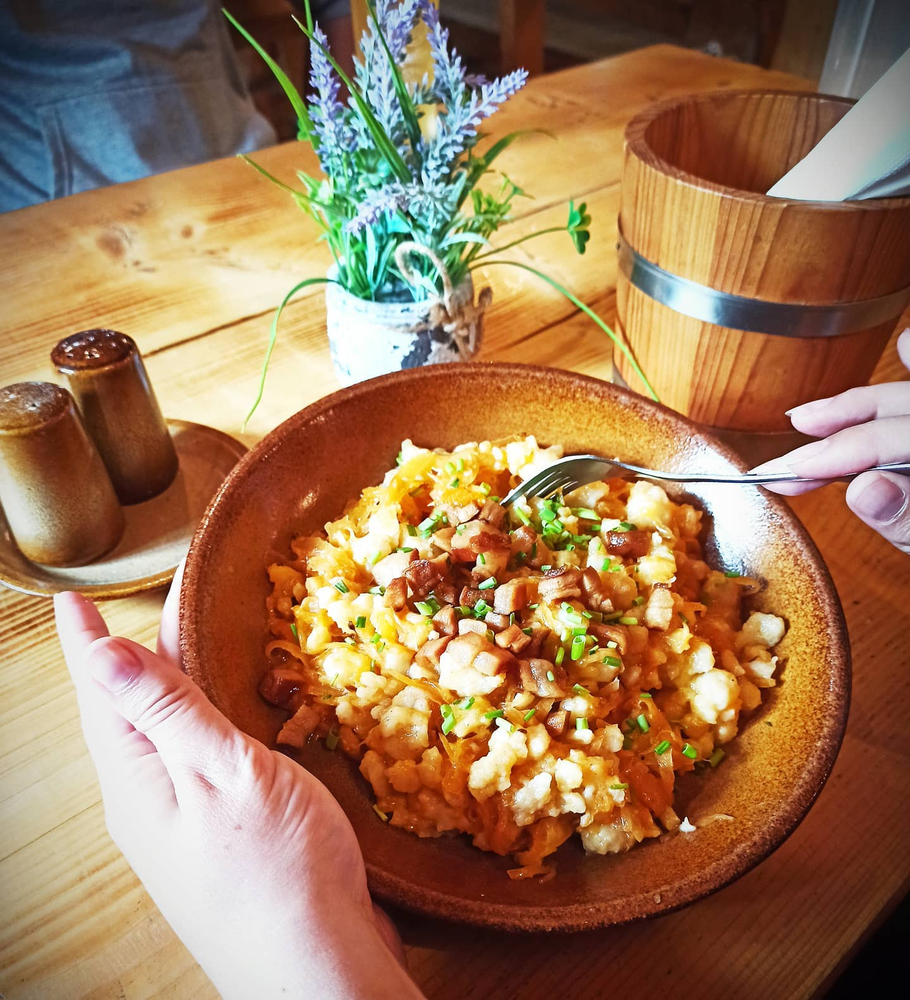

Strapačky s kapustou podľa @eatandtravel.cz — Normy Jedál
Ty nejlepší halušky! Správně tedy strapačky ☺️ Pěkně se zelím, vypečenou slaninou a cibulkou, to je dobrota!
.
.
.
#halusky #slovensko #strapacky #zeli #strapackyskapustou #strapackysezelim #slovenskehalusky #slovenskakuchyna #slovakia #slovenskejedlo #tradicnakuchyna #koliba #obed #vysoketatry #highttatras #liptovskamara #besenova #obedvkolibe #dovolena #dovolenanaslovensku #kolibabesenovka #eatandtravel #eatandtravelcz